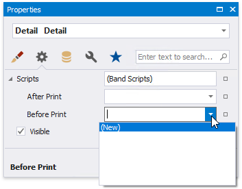
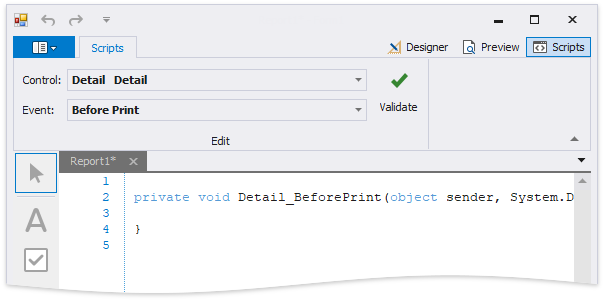
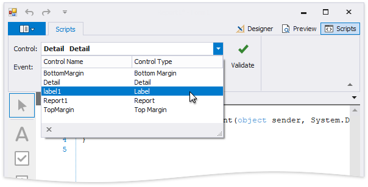
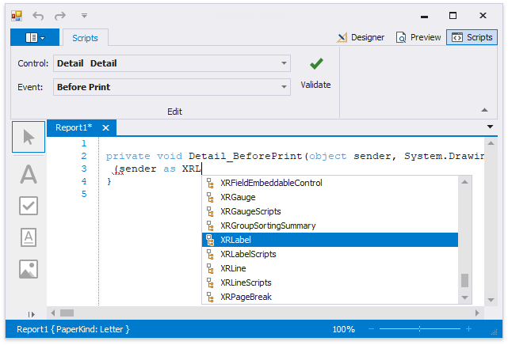

Use Report Scripts
This document describes the basic principles of scripting, which can be performed by handling the events of a report, and its bands and controls.
Scripts are program commands, placed within the event handlers of the required report elements. And, when the corresponding event occurs (e.g. a mouse click), the script code runs.
You can write scripts for a report or any of its elements (bands and controls), to be executed when the report is being previewed, printed or exported.
In the Property Grid, expand the Scripts property for the required element. Every report element has an individual set of script events.

After you click (New) for an event (e.g. the Before Print, which is the most used), the Scripts Tab is switched on, where you can manage and edit all the report's scripts.

In this tab, for a selected event, a script template is auto-added, in the language specified via the Script Language property of the report.
This tab contains all scripts written for all report elements, and allows you to quickly navigate through them by choosing the required report element in the corresponding drop-down list, and specifying one of its available events in another menu.

The script editor supports intelligent code completion that makes it easier and faster for you to write scripts. Context-aware hints are displayed on typing a dot or pressing CTRL+spacebar.

You can verify that your report's scripts are valid, by clicking Validate. The validation result is then displayed in the Scripts Errors panel.

To proceed to the line that contains an error, click that error in the Error List panel.
Note that scripts are saved to a file along with the report's layout.